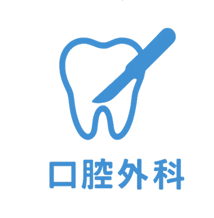
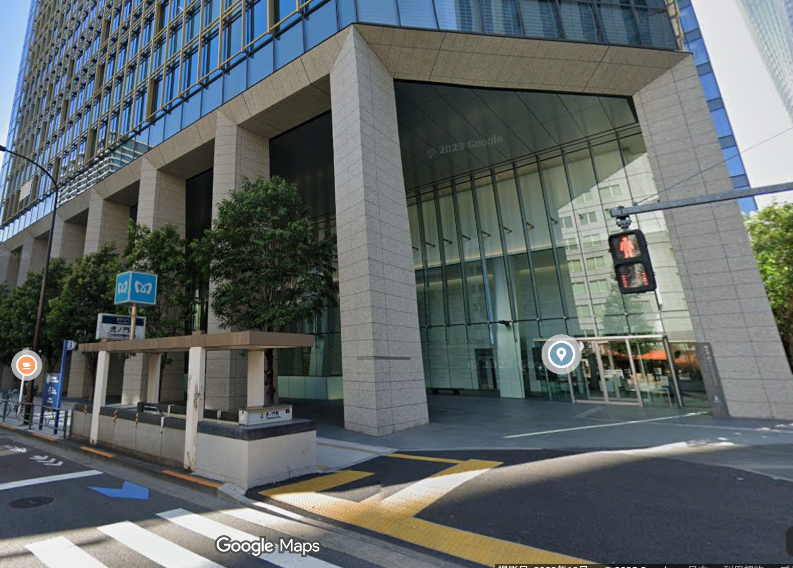

地域の皆様が安心して通える、
家族みんなのための歯科医院
当院は、小さなお子さまからご年配の方まで、
どなたでも安心して通える歯科クリニックを目指しています。
単に「治療をする」のではなく、患者さんの不安を和らげ、
笑顔で通えることを大切にし、最新の設備とやさしい診療で
家族みんなの健康な歯を守れるようサポートしていきます。

大切にしている3つのこと
1
痛みの少ないやさしい治療
麻酔の工夫や最新の技術を取り入れ、痛みを最小限に抑えた治療 を心がけています。歯医者が苦手な方も、安心して通っていただけるよう配慮しています。
2
お口の健康を守る予防歯科
「痛くなったら行く」のではなく、むし歯や歯周病を防ぐ予防ケア を大切にしています。定期検診・クリーニングで、大切な歯を一生涯守ります。
3
清潔で最新の設備
患者さんが安心して治療を受けられるよう、徹底した衛生管理 と 最新の歯科医療機器 を導入。快適な環境で、質の高い治療を提供します。
当院の特徴
清潔で快適な診療環境
患者さんに安心して治療を受けていただけるよう、衛生管理を徹底 し、最新の滅菌システムを導入。院内は明るく、清潔感のある快適な空間づくりを心がけています。
小さなお子さまからご年配の方まで通いやすい
お子さまが楽しく通えるように、キッズスペースを完備。また、ご年配の方やお身体が不自由な方にも安心してご来院いただけるよう、バリアフリー設計 になっています。
診療内容
むし歯の治療・詰め物・かぶせ物
歯周病の治療・歯石除去
神経の治療（根管治療）
乳歯のむし歯治療
シーラント（むし歯予防処置）
フッ素塗布・歯磨き指導

親知らずの抜歯
顎関節症の治療
口内炎・粘膜疾患の診療
定期検診・クリーニング（PMTC）
フッ素塗布で歯を強くする
歯周病の予防と早期発見

